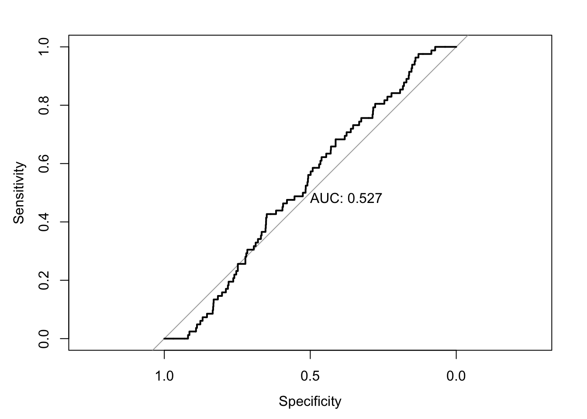

6 Model Fit in Binary Response Models
6.2 ROC-Curves
- Measure how well a model is able to separate cases
- Capture the trade-off between correctly predicting 1s and 0s.
- Construct a curve which has:
- y-axis: Probability of correctly predicting a 1. (Sensitivity)
- x-axis: (1-Specificity); Specificity: Probability of correctly predicting a 0.
- Diagonal: Model with no covariates


6.2.5 Interpretation
- The further away from the diagonal, the better the model predicts 1s and 0s.
- Area: Would be 100% if the model correctly predicted everything
- This becomes smaller as the model becomes worse
- Good for comparisons between models.
6.2.10 Survival
prob_sur <- predict(survival, type="response")
world_democ1$prob_sur <- unlist(prob_sur)
roc <- roc(world_democ1$democracy, world_democ1$prob_sur)
auc(roc)
Area under the curve: 0.8504
6.3 Exercises
6.3.1 The Data Set
Use the data set called prz.dta. This is the data set used in Przeworski et al.’s 2000 book, Democracy and Development. Deposit this in an appropriate working directory and import the data set into a data frame called . We will only be looking at a few variables – democ = 1 if democracy, 0 otherwise; gdpw - GDP per worker; g = growth rate; oil = 1 if oil producer, 0 otherwise.
6.3.2 Basics
- Run a probit model where is the dependent variable and and are the independent variables. Put the results in column 1 of Table 1. What is (possibly) wrong with this approach? Interpret the coefficients on one or two of the variables.
. Run the same probit model as before but now include a lagged dependent variable. To create the lagged dependent variable, call:
Put the results in column two of Table 1. What are we assuming by including a lagged dependent variable? Do you think that this is appropriate here?
Now estimate a probit “transition to democracy” model i.e. how do growth, wealth and oil affect the probability that a country is a democracy this year given that it was a dictatorship last year. We are also lagging the independent variables by one year. Put the results in column 3 of Table 1. Interpret the sign of the coefficients on each independent variable.
Now estimate a probit “survival of democracy” model i.e. how do (lagged) growth, wealth and oil affect the probability that a country is a democracy this year given that it was a democracy last year. Put the results in column 4 of Table 1. Interpret the sign of the coefficients on each independent variable.
6.3.3 Advanced
For this section you will have to read through the instructions for joint estimation, provided separately
- Now interact all the lagged independent variables with the lagged dependent variable. Estimate a fully interactive model and include all the constitutive terms. Put the results in column 5 of Table 1. What is the relationship between these coefficients and those in the previous two columns? Is there any extra information provided by this full interaction model that was not available from the previous two models?
- Now consider the straight probit model, the probit model with the lagged dependent variable, and the full interaction model. Produce the ROC curve for each of these models. Interpret a point on one of these curves. What do the ROC curves tell you about the fit of these three models?